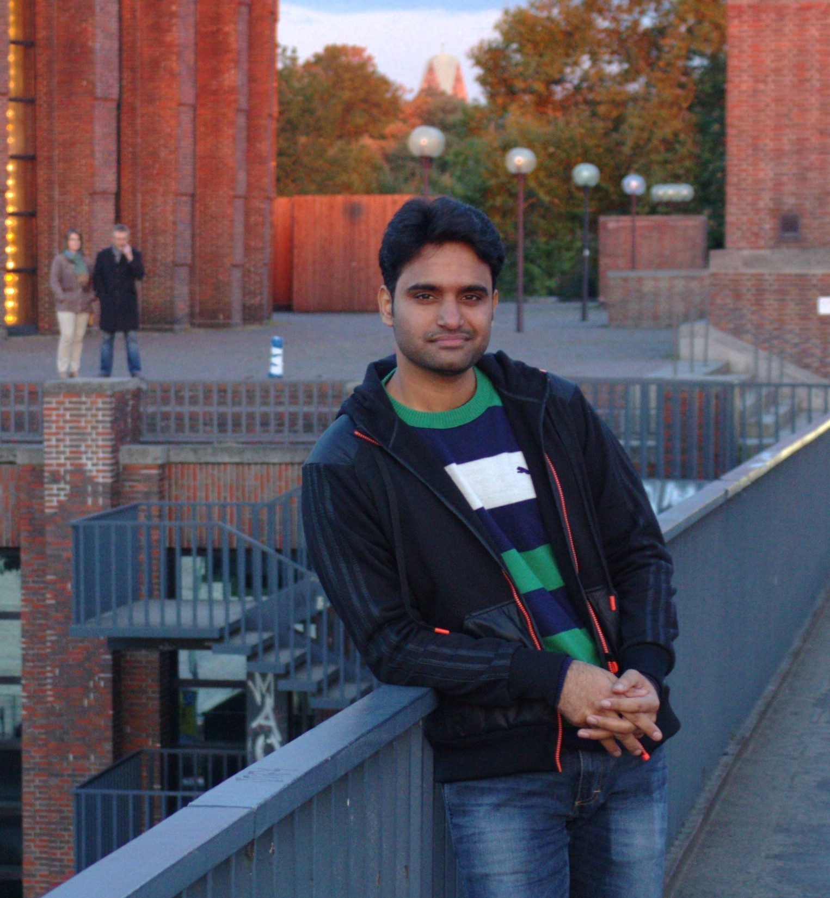

Madhav Nimishakavi
Phd Student
Computer Science & Automation, IISc, Bangalore, India
I work in Machine and Language Learning (MALL) lab, IISc. Broadly, I work in creating Machine Learning models for Natural Language Understanding and Knowledge Base Construction.
I am interested in the applications of Tensors among other ML methods. I am also interested in exploring new places and playing Tennis.
Work Experience
- Amazon Core Machine Learning Team, Bangalore. Applied Science Intern, June 2017 - September 2017
- Indian Institute of Science, Bangalore.Teaching Assistant, UE 101, Algorithms and Programming, Fall 2016
- Wipro, Bangalore. August 2015-October 2015, Research Intern
- Indian Institute of Science, Bangalore. Teaching Assistant, E0 268, Data Mining, Spring 2015
- Microsoft India Development Center, Hyderabad. June 2012-July 2014, Software Development Engineer in Test
Projects & Publications
- Madhav Nimishakavi, Pratik Jawanpuria, and Bamdev Mishra. A dual framework for low rank tensor completion. Thirty-Second Conference on Neural Information Processing Systems (NIPS 2018), Montreal, Canada.[arxiv:1712.01193] [code]. A shorted version was accepted to NIPS workshop on Synergies in Geometric Data Analysis, NIPS, 2017.
- Madhav Nimishakavi, Bamdev Mishra, Manish Gupta and Partha Talukdar. Inductive Framework for Multi-Aspect Streaming Tensor Completion with Side Information.
27th International Conference on Information and Knowledge Management (CIKM 2018), Turin, Italy. [arxiv:1802.06371] [code]
- Prateek Yadav, Madhav Nimishakavi, Naganand Yadati, Arun Rajkumar and Partha Talukdar. Lovasz Convolutional Networks. [arXiv:1805.11365]
- Naganand Yadati, Madhav Nimishakavi, Prateek Yadav, Anand Louis and Partha Talukdar. HyperGCN: Hypergraph Convolutional Networks for Semi-supervised Classification. [arXiv:1809.02589]
- Madhav Nimishakavi, Manish Gupta, Partha Talukdar, Higher-order Relation Schema Induction using Tensor Factorization with Back-off and Aggregation.
Association for Computational Linguistics (ACL 2018), Melbourne, Australia. [pdf][code]
- Madhav Nimishakavi, Pratik Jawanpuria, Bamdev Mishra, A dual framework for low rank tensor completion.
Synergies in Geometric Data Analysis Workshop at NIPS 2017, Long Beach, USA.
Longer Version [arxiv:1712.01193] [code]
- Madhav Nimishakavi, Uday Saini, Partha Talukdar, Relation Schema Induction using Tensor Factorization with Side Information.
International Conference on Empirical Methods in NLP (EMNLP 2016), Austin, USA. [ pdf] [ code ].
- Madhav Nimishakavi, Uday Saini, Partha Talukdar, technical report on Applicability of Tensor Factorization methods for the problem
of Predicate Induction. 2015.
[ pdf].
- Madhav Nimishakavi, M. Narasimha Murthy Use of semantics in topic based classification.
ME Project Report. 2012. [ pdf].